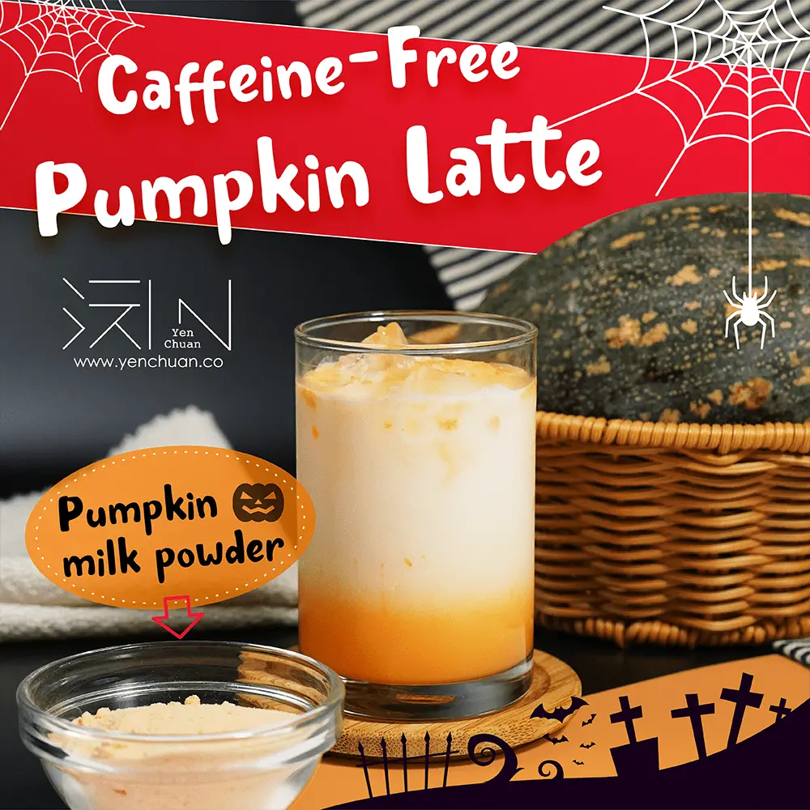
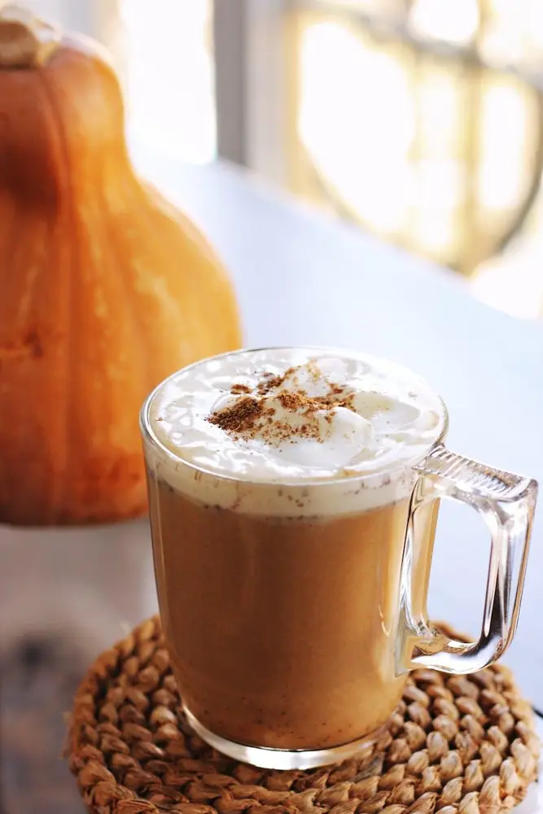

文章 / 飲品配方與資訊
Enjoy a spooky night with caffeine-free pumpkin latte!
這篇是英文原文，尚未完成繁體中文翻譯。中文選單與相關商品連結不會切回英文介面。

查看英文原文（尚未翻譯）
Can you smell the crisp autumn air? PSL(Pumpkin Spice Latte) season is right around the corner! Savor the warm spices of this seasonal coffee shop favorite in your very own kitchen – save up a few bucks, and enjoy it all year round!
What’s great about it?
Pumpkin is undoubtedly the king of autumn flavours, and with good reason: With its warming flavors and health benefits, this easy homemade latte is a must-have this season.
What’s more, it’s caffeine-free making it ideal for kids and adults who can’t handle caffeine!
Mix and match!
You can serve it hot or cold, or blend it with ice to make a frappe!
If you want to get extra fancy, you could even drizzle a little caramel sauce in the glass for a real coffee shop look!
Want to give it a twist？ Pour in 1 /4 to 1/2 cup espresso or dark coffee to make a delicious pumpkin spice latte!
Add to cereal, oatmeals or granola for the perfect way to start your day! Want an afternoon break? Serve it with lemon scones or a brownie.
This easy fall drink recipe is perfect for all your pumpkin cravings!
Learn more about how to make it at home with a few simple steps:

Caffeine-Free Pumpkin Latte
Savor the season with a homemade pumpkin latte!
What you’ll need
How to make:
Fill the glass with pumpkin milk powder and water, stir well
Pour in milk
Add ice cubes and serve
Quick Tip: Put a dollop of fluffy whipped cream on top, and add a sprinkle of cinnamon or mixed spices to take this beverage to the next level!
You can serve it at any time, be it for breakfast, as a satisfying snack, or as a tasty late-night treat before bedtime.
Nothing warms you up more than pumpkin lattes on a cold night when you want a relaxing and better night’s sleep!